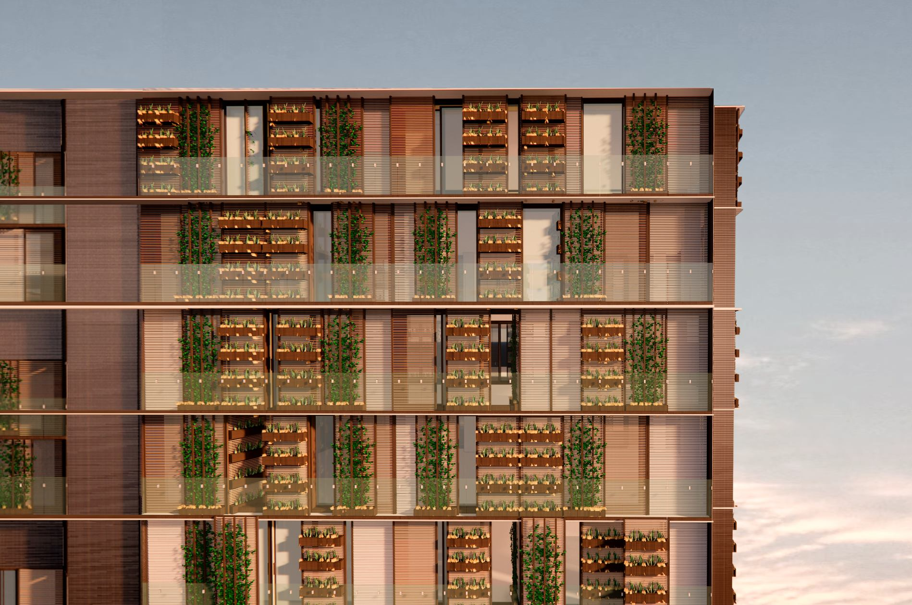

Architectural Exploration
Formal experimentations, urban parameters, competitions, visualization, AI-integrated workflow, and more.
Personal Blog Documentation

Let's explore the contradictory yet complementary field between the art and technology.
Formal experimentations, urban parameters, competitions, visualization, AI-integrated workflow, and more.

Research tools and projects: urban analysis with 360° images, street-view workflows, and spatial reconstruction.
Research tools and projects: urban analysis with 360° images, street-view workflows, and spatial reconstruction.
Written guides and notebooks for solar exposure analysis, ZenSVI, and MP-SFM postprocessing — with links to the repositories on GitHub.